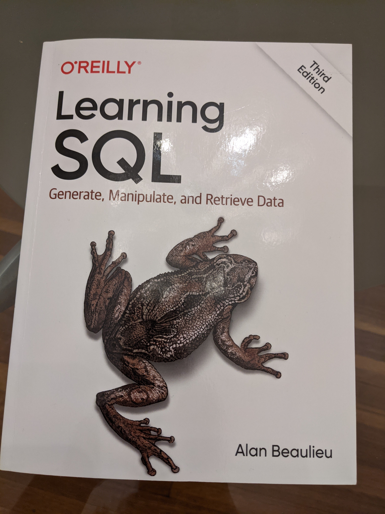

Table of Contents
1 はじめに
SQLの入門書、Learning SQL Third Edition by Alan Beaulieuを読みました。Pythonの「お勉強」にもだいぶ飽きが来ていたのですが、多少なりともまともなアプリケーションを書くために、データベースの知識が必要と考えたためです。
私はSQLについてほとんど知りませんでした。職場でQAテストを手伝う際に、手順書に書いてある SELECT * FROM ... WHERE ... のようなSQLをおまじないのように使うことがあったくらいで、それが何を意味するかほとんど理解してませんでした。
ネットでSQLの入門書を検索して、評判の良さそうな本書を読むことにしました。
2 Learning SQL

Learning SQL Alan Beaulieu著の第3版は去年出たばかりです。最近のオライリー本は表紙がカラーになっていますが、この本もキモい干からびたようなカエルが描かれています。表紙は以前の方が好みです。
本書はMySQL準拠で書かれています。私の職場ではPostgreSQLやsqlite3をつかっているのですが、基本コマンドに見えたshow tablesやdesc <table>がこれらのデータベースで使えないことを知ったときにはショックでした。SQL以外の部分には互換性はほとんど無いのですね。。。
2.1 SQL入門書として
完全な初心者向けではない、というレビューを見かけて、ついて行けるか若干心配だったのですが、特に問題なく読み通すことができました。
プログラミングは特に入門者は、頭で理解するだけでなく、手で覚えることがとても重要ですが、その意味でも本書はよくできていると思います。私はサンプルを一通り入力して動きを確認し、各チャプターの最後に載っている演習問題もやりました。この演習問題がよく出来ていて、消化不良気味な理解をうまく補完してくれました。
本書を読むにあたって、トランザクションやインデックスが何を意味するか、くらいのデータベースの基本的な知識はあった方がよいと思います。
2.2 サンドボックス
自分でMySQLをインストールしなくても、MySQLがインストールされていて本書で使うテーブルを持つサンドボックスをオライリーが用意してくれています。登録が必要ですが無料で使えます。数十分でセッションがexpireするので、そのたびにブラウザーをリフレッシュして読み直さなくてはいけません。このとき、入力途中だったものは全て消えてしまうので、手元のエディタ等を使って書いたSQLをコピペするようにした方がよいでしょう。
2.3 MySQL準拠
PostgreSQL, Oracle, MySQLなど異なるデータベース間ではSQL以外の互換性がほとんどないので、できれば自分の使うデータベースに準拠したテキストを使うのがよいかもしれません。ただ、私のような入門レベルでは、ネット検索ですぐに答えの見つかる、表面的なコマンドの違いを除いて、大きな問題はありませんでした。
2.4 データベースの内部構造について
本書はSQLの入門書であって、データベースの内部的な構造や動きについてはほとんど説明がありません。しかしデータベースを道具として使えればよいのであれば問題はありません。個人的には、インデックスがb-treeで出来ている(別の場合もあり)ことがわかったのは収穫でした。私にとってデータベースのインデックスは極めて不可思議で魔法的な存在だったので。
2.5 効果
本書をこなせば、テーブル作成からデータの入力(INSERT)、取り出し(SELECT)、インデックス作成など、基本的なSQL操作が一通り使えるようになるでしょう。SQL入門書として、よく出来ていると思います。もっと早く読んでおけばよかったです。
3 終わりに
大量のデータを扱うアプリケーションを作ろうとすると、言語によらず、データベースの知識が必要になってきます。その意味で、早い内にSQLに入門しておくことは、エンジニアとして大事なことと思います。本書はSQLの入門書として非常に優れていると思います。お勧めです。